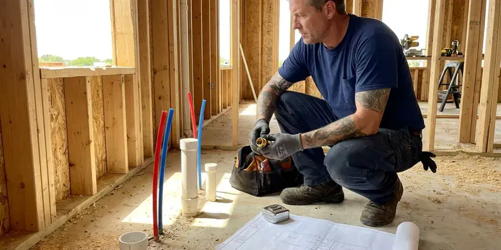

Walls Waterproofing in Waianae, HI
Damp drywall, peeling paint or white crust on block? We find the water source and waterproof walls in Waianae, HI for good.
- Written Quotes Before Work Starts
- Sump Pump Installs
- Block and Stem Wall Sealing
- Thermal Imaging and Moisture Meters

Leaking Shower or Wet Drywall? We Seal It in Waianae, HI.
A dry basement keeps sill plates and joists sound for decades. Book an inspection with HKL Plumbing.
Durable Waterproofing for Showers, Block and Foundations in Waianae, HI
HKL Plumbing has sealed walls in Waianae, HI that leaked only in spring, only after a storm, or every single day. Warm temperatures all year mean water heaters work less hard, but constant moisture under sinks and in walls can lead to mold and rot if leaks go unnoticed. We read the pattern before we pick a product, because a storm-only leak usually calls for drainage work while a wall that stays damp all year often has a plumbing leak in it. The timing is a big clue.
Our expertise includes:
- Crawl space vapor barrier work
- Crack injection with epoxy or polyurethane
- French drains and downspout routing

Additional Plumbing Maintenance Services in Waianae, HI
Our maintenance and specialty plumbing services in Waianae, HI protect your home year-round and extend the life of every system.


Customers
Why Choose HKL Plumbing for Walls Waterproofing in Waianae, HI?
Footing joints leak. Our crews know how footings, cold joints and window wells let water in, and they follow local code on drainage and grading on every job. A permit gets pulled when one is required.
- Home Protection, Dry walls keep mold out of the framing and protect your home's value.
- Lasting Repairs, Injection resins and elastomeric coatings last for decades when the wall is prepped right.
- Source First, We fix the plumbing or drainage problem before any waterproofing goes on.
Citywide Coverage
Our trucks cover all of Waianae and the towns around it. A wet basement on the far edge of town gets the same written quote and moisture survey as one a mile from our shop, and we schedule based on how bad the leak is, not by zip code. Distance does not change that.
Experienced Team
Hundreds of leaking showers and damp walls have been rebuilt by our crew. They know how water travels through block, stucco, plaster and drywall, and that it often shows up two or three feet from where it started. Tracing is the skill.
Safety-First Approach
Our installs meet Hawaii plumbing and building standards, and every coat, cure time and flood test gets written down. Inspectors can see the paper trail. We keep a copy of the file for you.
Trusted Certified Waianae Plumbing Services Professionals
At HKL Plumbing, we are proud to offer certified plumbing services throughout Waianae, HI. Those papers on the wall mean something. Every repair, install and maintenance visit follows strict safety and quality rules, and the plumbers doing the work carry recognized industry credentials.
Call Us Now PHCC Plumbing Contractor Recognition
PHCC Plumbing Contractor Recognition Better Business Bureau (BBB) Accreditation
Better Business Bureau (BBB) Accreditation Angi Certified Pro
Angi Certified Pro ISO 9001 Quality Management Certification
ISO 9001 Quality Management CertificationFoundation, Shower and Block Wall Sealing in Waianae, HI
Below-Grade and Basement Wall Waterproofing in Waianae
A lot of Hawaii housing dates from the postwar decades, including single-wall construction where pipes run through tight, hard-to-reach spaces. Any wall below grade sits in soil that gets saturated after heavy rain or snowmelt, and that water pushes against the wall with real hydrostatic pressure. We inject cracks, coat the wall inside or out, and install drain tile where water pools along the footing. A sump goes in if groundwater sits high. Some basements never need a sump.

Foundation Crack Repair & Sealing in Waianae
Hairline cracks in poured concrete walls leak more water than their size suggests. We inject them with low-pressure polyurethane, which expands to fill the crack from the inside face to the soil side, or with epoxy when the crack also needs structural bonding. Horizontal cracks are different. A horizontal crack often signals soil pressure pushing the wall in, so we check for movement with a level before we seal anything. Vertical cracks are usually a one-visit job.
Cost-Effective Waterproofing Solutions in Waianae, HI
Not every wet wall needs a $15,000 excavation. Sometimes the fix is a downspout extension and regrading the soil so it slopes away from the house, six inches of drop over the first ten feet, and that costs a few hundred dollars. We start with the cheapest fix that will actually work. You get the options in writing, side by side.
Shower Wall Waterproofing in Waianae
Tile and grout are not waterproof. Water passes through grout every time you shower, so the layer behind the tile, cement board with a membrane or a foam board system, is what actually keeps the studs dry. We tear out failed tile, install new backer, and apply Schluter Kerdi, RedGard or Hydro Ban at the thickness the manufacturer calls for. We reinforce corners, niches and valve penetrations with fabric or preformed pieces.
Plumbing Leak Behind Walls in Waianae
A drip from a shower valve cartridge, a sweated copper stub or a loose drain slip nut can soak a wall cavity for months before paint bubbles. We find it with a moisture meter, a thermal camera that shows the cool wet spot, and a pressure test on the supply lines. Then we cut a clean access hole. We replace the leaking fitting or pipe section. We pull wet insulation and run fans until the cavity reads dry.
Laundry Room and Utility Wall Waterproofing in Waianae, HI
Rubber washing machine hoses burst. We swap them for braided stainless hoses, put a drain pan under the washer piped to a floor drain where one is available, and install a quarter-turn shutoff or an automatic leak valve on the supply box. Water heaters get a pan too. Behind the heater we can install moisture-resistant board and seal it.
Crawl Space Encapsulation in Waianae
Encapsulation seals the whole crawl space, walls and floor, with a reinforced poly liner. We run 12 to 20 mil liner up the walls, tape every seam, seal around piers and pipe penetrations, and often add a dehumidifier to keep relative humidity below 60 percent. Warm temperatures all year mean water heaters work less hard, but moisture under sinks and in walls can lead to mold and rot if leaks go unnoticed. Wood rot slows to a stop. Drier air under the floor also cuts down on the musty smell in the house.

Commercial Wall Waterproofing in Waianae
Restaurant kitchens, gym locker rooms and salon wash stations put water on walls all day. We waterproof commercial showers, mop sink walls and restroom wet walls with membranes rated for constant water exposure, and we repair the supply and drain piping behind them if demolition turns up a leak. After-hours scheduling is available.
Waterproofing Contractors Near You in Waianae, HI
Moisture meters and thermal cameras ride on every truck. That lets us give you an answer on the first visit, including where the water is coming from and which repair fits, instead of scheduling a second trip just to diagnose. Quotes come in writing.
Homes around Waianae share a handful of common builds, including slab ranches, block crawl spaces and full poured basements. Each one has its usual leak points, and knowing them helps us find the water source on the first pass instead of opening walls to look. Warranty calls are easy for us to get to.
HKL Plumbing at a Glance
- Licensed and insured plumbers serving Waianae, HI
- 24/7 emergency service with same-day scheduling
- Clear written estimates, no hidden fees
- 4.8-star rated by 529+ Hawaii customers
Waianae Map
Waianae Information
- Population
- 13,614
- Area codes
- Local
- Service area
- Waianae and communities within 40 miles
- Nearby
- Maili, Nanakuli, Schofield Barracks, Makakilo
Sprinklers, storms and daily showers all push water into block, stucco and drywall, so Waianae, HI homes need walls sealed where the water gets in.
Talk to a Plumber
Reach out to HKL Plumbing for honest, reliable plumbing from people who know the trade in Waianae, HI.
Our Specialized Plumbing Services in Waianae, HI
At HKL Plumbing, we handle the full list of plumbing services across Waianae, HI. From leak detection to full system installs, our team works fast and charges fair prices on homes and commercial properties alike. Explore our core services below:


Our Wall Waterproofing Steps in Waianae, HI
Our process starts with tracing the water and ends with a sealed, verified wall.
Request a Quote
Call (808) 649-6718 or use the online form. We book a time that fits your schedule for the on-site visit.
Detailed Inspection
Our tech tracks down where the water is coming from and checks how far the damage reaches. You get the findings in plain terms.
Custom Solution
We build the plan around the leak and the type of foundation, and pick materials that suit the wall.
Frequently Asked Questions About Walls Waterproofing in Waianae
Shower wall waterproofing with a membrane system usually runs $1,200 to $3,500 including demolition and backer board, but not counting the new tile. Block wall sealing outside often costs $800 to $3,000. Below-grade foundation work generally ranges from $2,500 to $8,000.
Damp proofing is usually a thin spray-on asphalt coat. It slows soil moisture but cannot hold back water under hydrostatic pressure. Waterproofing uses thicker membranes, drainage boards and footing drains rated to stop liquid water, which is what a basement in wet soil or a high water table needs.
It depends on the wall and the site. On exterior foundation work we use liquid polyurethane-modified asphalt, rubberized asphalt sheets, bentonite panels and crystalline coatings, picking the one that suits the soil and the wall material. Inside showers, it is Kerdi, RedGard or Hydro Ban.
Anywhere from an afternoon to over a week. Interior crack sealing might take a day or two, while exterior excavation with new footing drains might run several days or longer than a week depending on the size of the house. Wet weather can push exterior work back.
Often, but not always. A remodel that moves the valve, changes the drain location or alters supply piping usually needs a permit, while replacing a failed membrane on the existing layout may not. We look up your local requirements and get the permit if one is required.
We do. Our workmanship is warrantied, and many membrane systems carry their own manufacturer warranty when they are installed to spec, which is one more reason we never skip a step on cure time or thickness. The coverage is written into your quote.
Every install gets a written warranty on materials and workmanship. Your proposal lists exactly what is covered and for how long, and when a manufacturer offers its own warranty on a membrane or resin we register it in your name. Store the paperwork with your home documents.
Interior systems manage water after it has come through the wall, with drain tile along the footing and a sump to pump it out. Exterior waterproofing stops water before it reaches the wall, which means digging down to the footing and applying a membrane to the outside face. The exterior route costs more.
Hear From Customers Who Hired Our Plumbing Experts

Megan L.
Our upstairs tub drained so slowly that every shower turned into a bath. HKL Plumbing pulled a wad of hair out of the stopper and then snaked the line past the trap. Three months later it still drains fast.
Drain Cleaning · Schofield Barracks, HI
Carlos V.
Our house still had galvanized pipe, and upstairs the shower was a trickle. The crew repiped everything in PEX over three days and patched every drywall hole before they left. The pressure difference is night and day.
Repiping · Waianae, HI
Monica A.
Our water bill nearly doubled in one month with no change in how we used water. The tech checked the meter, heard the leak under the hallway with his equipment, and opened a hole about a foot square. Fixed the same day.
Slab Leak Repair · Royal Kunia, HITyler J.
We bought a taller comfort height toilet for my dad, who just had knee surgery. The plumber pulled the old one, found the flange was cracked, and replaced it before setting the new bowl. Took about two hours.
Toilet Installation · Makakilo, HI
Kevin O.
Before buying our house I paid for a sewer camera inspection. HKL Plumbing found a belly in the line that held standing water about forty feet from the cleanout. We used the video to get the sellers to fix it before closing.
Sewer Camera Inspection · Waianae, HILisa C.
Water was pouring out from under the washing machine on a holiday weekend. HKL Plumbing talked me through closing the valves over the phone and had a plumber at the house within ninety minutes. It was a burst fill hose.
Emergency Plumbing · Schofield Barracks, HI